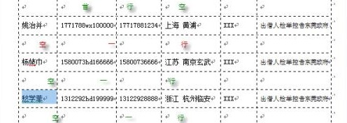

1、用手机对签名表进行拍照，拍照时尽量保持水平，只需要拍到签名部分即可，其他部分可以不用拍进来。
拍照示例图：

2、将拍照后的图片文件名重命名成“姓名.png”或“姓名.jpg”，如有多人签名请重命名成“姓名1+姓名2+姓名2.png/jpg”格式。
3、将拍好的签名表照片邮件发送到 engi0723@gmail.com 。
邮件标题请填写“签名表照片”。
正文请填写“姓名+日期”，如有多个签名，请填写多行。
邮件示例图：
别忘记在附件中附上签名表照片
恭喜你已经完成了签名表的填写。